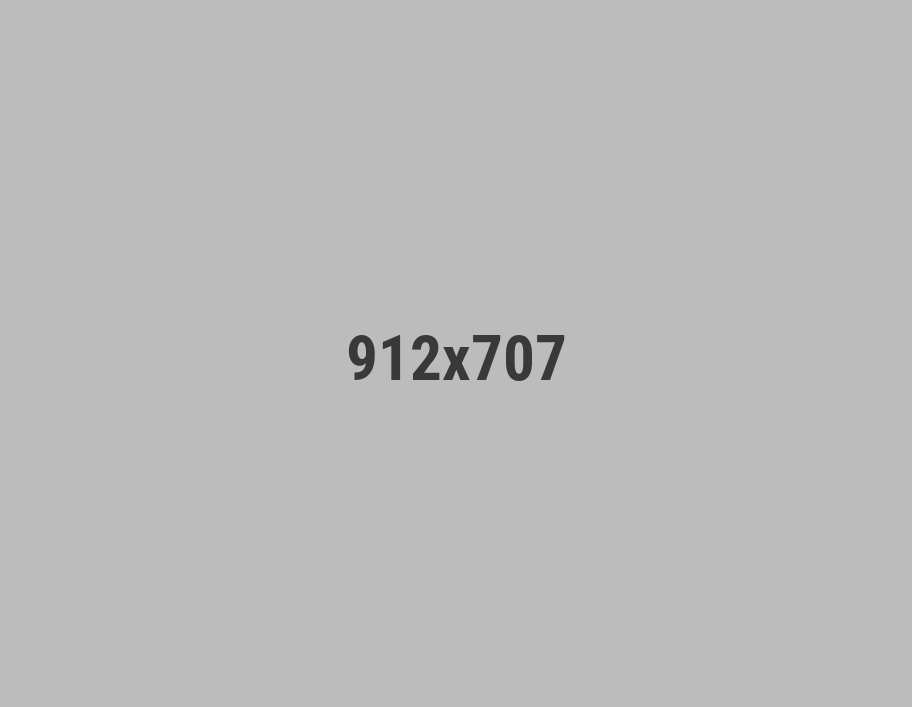

Simplify UAE Visa & Business Setup—Track, Process & Manage with Ease
Waflow is your all-in-one workflow automation tool for agents, consultants & agencies—manage visa processes, KYC, business setup, and documentation like a pro.
Start Managing Smarter

64,739+
Applications Processed
Appropriate features for proper use of time
Create visa/workflow pipelines
Planning ahead is a key factor when creating an employee work schedule important for business.
Real-time status tracking
Offline time tracking is the time tracking feature that is used to track the time at work productive.
Upload & store documents securely
It's a simple automatic time tracker that helps your teams log billable hours for all projects.
Schedule and assign agent tasks
Project time management directly impacts the quality, scope, and cost of a project, making it.
Workflow tools built for speed
Built for high-volume operations
Masco is an intuitive, lightweight solution for tracking hours and projects that is easy to adopt and use every day, we've designed it to be super fast.
-
Auto-tag clients
Easily download the free Masco time tracking app for iOS, Android, macOS, Windows or Linux on any device anytime.
-
Create custom workflows
Create your account in minutes with the necessary information to ensure the security of your information.
-
Real-time reminders
Track time manually using a timer or automatically for scheduled tasks and to-do lists & also tracked hours, budgets, and costs.
Integrate time tracker with 70+ popular tools
"My hours are great for keeping track of time spent on different projects. Masco makes my mandatory timesheets at the end of the week much faster."

Dominika Smith
Senior Digital Marketing Manager
Some FAQs about our time track software
-
Time tracking allows you to make more intelligent decisions about how you price and run projects, how you schedule your team, and even how you spend your day. In short, employee time tracking software is a computer program.
-
Time tracking allows you to make more intelligent decisions about how you price and run projects, how you schedule your team, and even how you spend your day. In short, employee time tracking software is a computer program.
-
Time tracking allows you to make more intelligent decisions about how you price and run projects, how you schedule your team, and even how you spend your day. In short, employee time tracking software is a computer program.
-
Time tracking allows you to make more intelligent decisions about how you price and run projects, how you schedule your team, and even how you spend your day. In short, employee time tracking software is a computer program.
-
Time tracking allows you to make more intelligent decisions about how you price and run projects, how you schedule your team, and even how you spend your day. In short, employee time tracking software is a computer program.